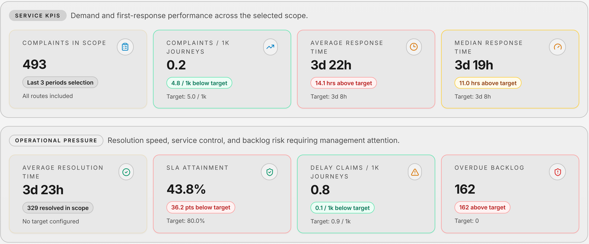
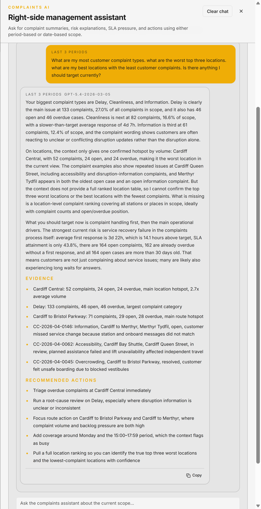

A fairer comparison
Calendar and uploaded reporting periods align analysis with your reporting cycle. Journey-normalised complaint and delay-claim rates help compare services in context.
Customer intelligence & event operations
Understand the people.
Prepare the operation.
Turn fragmented customer data into insight and forecasts. Bring event plans, rosters and risk management together to prepare for the demands ahead.
01 / Customer intelligence
Bring customer records into a shared view of service pressure. Understand what is happening, where it is concentrated and what needs attention next.

Consolidate customer records from multiple sources. CSV ingestion includes field mapping, preview and verification; other source connections are scoped around your systems.
Explore complaint volume, backlog ageing, response times and SLA exposure by route, channel, category and service line.
Use forecasting and AI-assisted commentary to identify emerging themes, likely service pressure and priorities for management review.
Move from an overall trend to the complaint register, review individual records and track status, priority, outcomes and resolution.
Calendar and uploaded reporting periods align analysis with your reporting cycle. Journey-normalised complaint and delay-claim rates help compare services in context.
Filter the complaint register, review details and record first response, investigation, outcome and closure activity without separating insight from action.
Build reporting and briefing around the selected dataset, with a clearer connection between customer evidence and operational priorities.
Intelligence with context
AI-assisted briefing works from the selected complaint scope, helping managers explore themes, hotspots and areas of increasing service pressure.
Forecasts support planning; they are not guarantees. Interpretation depends on source quality, the reporting scope and operational context.

02 / Event operations
Bring event planning, staffing rosters, risk management and forecasting into the operational conversation. Prepare teams around the event, not around disconnected documents.
Connect the expected demands of an event with the people, plans and risk decisions needed to deliver it.
Discuss your event workflowBring event plans and demand forecasts together to inform preparation, resource discussions and the review of likely pressure points. Agree the forecast inputs and planning assumptions for each event.
Organise event staffing through rosters, connecting planned roles and coverage with the event schedule. Keep the resourcing discussion alongside the plan it supports.
Bring event risks into planning and readiness reviews. Relate the risk picture to resources, responsibilities and the decisions that need attention before delivery.
Support event management with a clearer view of plans, people and risk. Review the event alongside customer insight to inform the next planning cycle.
03 / Mobile reporting
An incident starts with what someone sees. Bring the type, location, time and supporting detail into one structured report, at the point of service.
Illustrative workflow based on the supplied reporting form. Demonstration data only; no report is sent.
Discuss mobile reportingYou do not need an account. Fields marked * are required in the reporting form.
Incident time is separate from submission time.
Suggest a related event. Admin confirms or amends the link during triage.
Optional contact details
Leave blank to report anonymously.
A demonstration review of the example report.
Demonstration complete. No report has been submitted.
Connected capability / Aerial Intelligence
Explore how aerial observation could complement event planning and security teams with a view of crowd conditions, access routes and the wider site.
Deployment-specific use cases
Governance before deployment
Aerial integration is not presented as a standard AMIS Customer feature. Each proposal needs an agreed purpose, site and airspace assessment, appropriate permissions, data minimisation, access controls and retention arrangements. Aerial support does not imply permission to fly over crowds.
Facial recognition and biometric identification are not advertised as included or deployed capabilities. Any proposed use would require a separate technical assessment, a demonstrable lawful basis, a data protection impact assessment and appropriate safeguards before it could be considered. Crowd awareness can be scoped without identifying individuals.
Part of the Apexiar portfolio
AMIS Customer
Start with the sources you have, the decisions you need to make and the operation you want to support.
Discuss your requirements